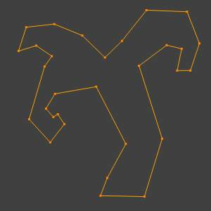
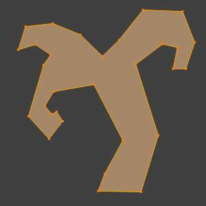
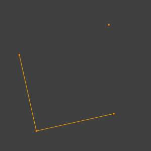
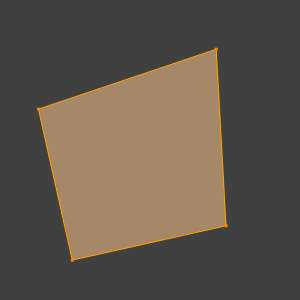
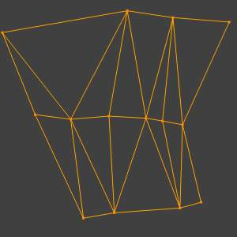
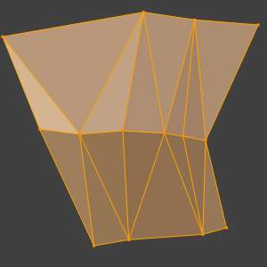
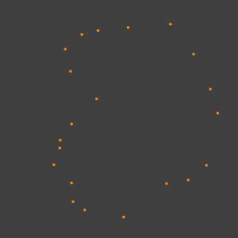
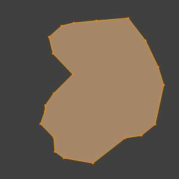

Make Edge/Face¶
参考
FThis is a context-sensitive tool which creates geometry by filling in the selection. When only two vertices are selected it will create an edge, otherwise it will create faces.
The typical use case is to select vertices and press F,
however, Blender also supports creating faces from different selections to help quickly build
up geometry.
Methods¶
The following methods are used automatically depending on the context.
{kind=link}
{kind=link}
{kind=link}
{kind=link}
N-gon from edges¶
When there are many edges Blender will make an ngon, note that this doesn’t support holes, to support holes you need to use the Fill Faces tool.

Before. |

After. |
{kind=link}
{kind=link}
Mixed vertices/edges¶
Existing edges are used to make the face as well as an extra vertex.

Before. |

After. |
{kind=link}
{kind=link}
Edge-Net¶
Sometimes you may have many connected edges without interior faces.

Before. |

After. |
{kind=link}
{kind=link}
Point Cloud¶
When there are many isolated vertices, Blender will calculate the edges for an n-gon.

Before. |

After. |
{kind=link}
{kind=link}
Single Vertex Selection¶
With a single vertex selected on a boundary, the face will be created along the boundary, this saves manually selecting the other two vertices. Notice this tool can run multiple times to continue creating faces.